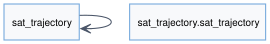
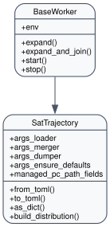
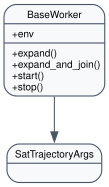
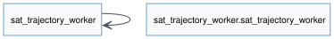
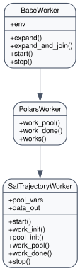

Sat Trajectory Project
Overview
Satellite-focused workload that fuses Two-Line Element (TLE) catalogues, waypoint requests and service definitions to plan communication windows.
Highlights multiprocessing and caching strategies for large orbital datasets while keeping Streamlit interaction smooth.
Complements the Explore 3D cartography and network views by providing satellite-centric outputs.
Manager (sat_trajectory.sat_trajectory)
Loads and caches TLE files, computes orbital parameters and seeds
WorkDispatcherwith dataset metadata.Normalises paths for managed machines, resets dataframe output directories and exposes
from_toml/to_tomlhelpers for Execute snippets.Uses helper functions to pre-process satellite catalogues (mean motion, semi-major axis) so workers can focus on heavy computation.
Args (sat_trajectory.app_args)
Rich Pydantic model that captures all required artefacts: data root, satellite catalogue folders, service definitions, heatmaps and output formats.
Provides merge/dump utilities so configuration updates flow seamlessly between Streamlit forms and
app_settings.toml.
Worker (sat_trajectory_worker.sat_trajectory_worker)
Distributes satellites across workers, generates visibility windows and aggregates results into exportable dataframes.
Makes use of thread pools and shared-memory caches to accelerate orbit propagation.
Includes Cython extensions and post-install scripts so heavy dependencies are prepared ahead of time.
Assets & Tests
app_test.pyvalidates install/distribute/run for the satellite scenario.test/_test_*modules cover TLE parsing, worker orchestration and helper utilities.src/app_settings.tomlenables the cartography views that make use of the generated satellite telemetry.
API Reference
{kind=link}

{kind=link}

{kind=link}

{kind=link}

{kind=link}
